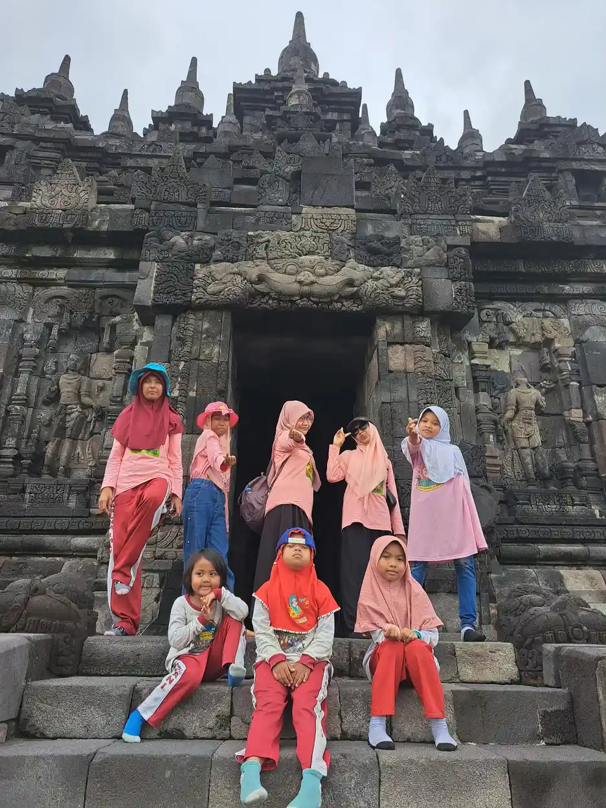

Program pemerintah untuk ABK mencakup pendidikan, kesehatan, perlindungan sosial, alat bantu, dan pelatihan. Simak cara memetakan kebutuhan dan mengecek layanan resmi. Dukungan yang tepat dimulai dari kebutuhan nyata anak, komunikasi yang dihormati, dan langkah yang dapat dievaluasi bersama.
Setiap anak memiliki profil, minat, dan kebutuhan dukungan yang berbeda. Karena itu, panduan ini menggunakan bahasa yang menghormati anak serta mendorong keluarga, guru, dan pendamping untuk mengamati, mencoba, lalu menyesuaikan strategi secara bertahap.
Daftar Isi
- Jawaban Singkat: Petakan Kebutuhan, Lalu Cek Layanan Resmi
- Dukungan Pendidikan: Sekolah Inklusi, SLB, dan Kesetaraan
- Dukungan Kesehatan dan Rujukan
- Perlindungan Sosial dan Administrasi
- Alat Bantu, Aksesibilitas, dan Mobilitas
- Pelatihan Keterampilan dan Persiapan Kerja
- Cara Mencari Informasi yang Bisa Dipertanggungjawabkan
- Buat Peta Bantuan 30 Hari
- FAQ
Jawaban Singkat: Petakan Kebutuhan, Lalu Cek Layanan Resmi
Program pemerintah untuk ABK tidak berada dalam satu layanan tunggal. Bantuan dapat berkaitan dengan pendidikan inklusi atau SLB, pemeriksaan kesehatan dan rujukan, alat bantu, perlindungan sosial, administrasi kependudukan, pelatihan kerja, atau layanan daerah. Ketersediaan, syarat, dan nama program dapat berbeda menurut wilayah serta kondisi anak.
Langkah paling aman adalah mulai dari kebutuhan nyata. Apakah anak membutuhkan tempat belajar, pemeriksaan perkembangan, alat bantu dengar, akses terapi, dokumen kependudukan, bantuan biaya, atau pelatihan kemandirian? Daftar kebutuhan membantu keluarga berbicara dengan instansi yang tepat dan menghindari pendaftaran program yang tidak relevan.
UNESCO menjelaskan bahwa pendidikan inklusif berupaya mengurangi hambatan agar semua anak dapat belajar dan berpartisipasi. WHO juga menekankan bahwa disabilitas berkaitan dengan interaksi antara kondisi seseorang dan hambatan lingkungan. Karena itu, keluarga tidak perlu menunggu anak memenuhi gambaran tertentu untuk mulai meminta penyesuaian akses.
Program pemerintah dapat menjadi salah satu dukungan, bukan satu-satunya penentu masa depan anak. Sekolah, puskesmas, rumah sakit, dinas sosial, dinas pendidikan, layanan disabilitas, yayasan, dan komunitas dapat saling melengkapi sesuai kewenangannya.
Bacaan pendidikan inklusi, pengertian disabilitas, dan hak penyandang disabilitas membantu keluarga menyiapkan pertanyaan. Selalu cek informasi terbaru melalui kanal resmi sebelum mengirim dokumen atau membayar biaya apa pun.
Dukungan Pendidikan: Sekolah Inklusi, SLB, dan Kesetaraan
Keluarga dapat berdiskusi dengan sekolah atau dinas pendidikan mengenai pilihan belajar yang sesuai. Pilihannya dapat mencakup sekolah reguler dengan dukungan inklusi, satuan pendidikan khusus, atau program pendidikan lain yang diakui. Pertanyaan penting meliputi akses fisik, guru pendamping, komunikasi, kurikulum, transportasi, dan cara evaluasi.
Simpan hasil asesmen, rapor, catatan guru, dan dokumen identitas. Dokumen ini membantu sekolah memahami kebutuhan tanpa mengulang seluruh proses dari awal. Asesmen ABK bukan sekadar syarat administrasi, tetapi bahan untuk merancang dukungan yang lebih tepat.
Tanyakan apakah ada bantuan perlengkapan, dukungan biaya, program penguatan literasi, atau pelatihan guru yang dapat diakses di wilayah keluarga. Nama dan mekanismenya dapat berubah, sehingga keluarga perlu meminta pengumuman atau prosedur tertulis dari pihak resmi.
Jika anak sudah berada di sekolah, mintalah rencana dukungan yang dapat dievaluasi. Program pembelajaran individual dapat memuat target akademik, komunikasi, kemandirian, dan partisipasi. Keluarga dapat meminta rapat jika dukungan belum berjalan atau kebutuhan anak berubah.
Untuk anak yang mempertimbangkan SLB, baca apa itu SLB dan untuk siapa satuan pendidikan khusus agar diskusi lebih terarah. Keputusan sekolah perlu mempertimbangkan profil anak, akses, jarak, dan kemampuan layanan, bukan stigma.
Dukungan Kesehatan dan Rujukan
Mulailah dari fasilitas kesehatan tingkat pertama atau layanan yang ditetapkan di wilayah. Bawa kartu identitas, kartu jaminan kesehatan bila ada, riwayat pemeriksaan, daftar obat, dan catatan keluhan. Tanyakan alur rujukan jika kebutuhan memerlukan dokter atau layanan lanjutan.
Kebutuhan anak dapat meliputi pemeriksaan pendengaran, penglihatan, perkembangan, gizi, kesehatan gigi, komunikasi, motorik, atau kesehatan mental. Tidak semua kebutuhan harus ditangani di tempat yang sama. Minta penjelasan tentang prioritas dan tanda bahaya yang memerlukan pertolongan segera.
Layanan terapi mungkin tersedia melalui jalur berbeda dan memiliki daftar tunggu. Tanyakan jadwal, biaya, tujuan, lama evaluasi, serta cara mengukur kemajuan. Terapi wicara dan terapi okupasi sebaiknya dipilih sesuai kebutuhan dan dilakukan oleh tenaga yang kompeten.
Jika informasi di media sosial berbeda dengan petugas, minta klarifikasi tertulis atau tautan resmi. Hindari membeli obat, alat, atau paket terapi karena janji kesembuhan. Dukungan kesehatan yang aman menjelaskan manfaat, risiko, keterbatasan, dan alternatif.
Perlindungan Sosial dan Administrasi
Dinas sosial atau layanan daerah dapat menjadi pintu informasi tentang bantuan sosial, pendataan penyandang disabilitas, alat bantu, kartu atau program daerah, serta rujukan perlindungan. Tidak semua keluarga otomatis menerima bantuan, karena setiap program memiliki syarat, kuota, dan verifikasi.
Siapkan dokumen dasar secara rapi, seperti kartu keluarga, identitas anak dan orang tua, surat keterangan domisili, dokumen sekolah, serta dokumen medis atau asesmen jika diminta. Tutup data yang tidak relevan ketika mengirim salinan kepada pihak yang belum terverifikasi.
Tanyakan nama program, instansi penanggung jawab, syarat, tahap verifikasi, jadwal, dan cara mengadu. Catat nama petugas dan tanggal kunjungan. Informasi ini membantu jika keluarga perlu mengikuti proses lanjutan atau memperbaiki data.
Jangan membayar perantara yang menjanjikan kepastian. Program resmi dapat memiliki biaya administrasi tertentu sesuai aturan, tetapi keluarga berhak meminta bukti pembayaran dan penjelasan. Jika ada tekanan atau permintaan data tidak wajar, hentikan proses dan cek ulang melalui kanal pemerintah.
Keluarga juga dapat menghubungi yayasan atau komunitas untuk dukungan informasi. Cara memahami yayasan sosial membantu membedakan layanan sosial, donasi, dan program pemerintah yang memiliki tanggung jawab berbeda.
Alat Bantu, Aksesibilitas, dan Mobilitas
Alat bantu perlu dipilih berdasarkan asesmen dan kebutuhan penggunaan sehari-hari. Contohnya alat bantu dengar, kacamata, kursi roda, tongkat, perangkat komunikasi, atau modifikasi lingkungan. Jangan memilih hanya berdasarkan harga atau rekomendasi umum karena ukuran dan kondisi anak berbeda.
Tanyakan proses pengukuran, pengadaan, perawatan, suku cadang, dan pelatihan penggunaan. Alat yang diberikan tanpa pendampingan dapat tidak terpakai atau bahkan tidak aman. Anak juga perlu diberi kesempatan mencoba dan menyampaikan apakah alat terasa nyaman.
Aksesibilitas tidak hanya soal alat. Jalur masuk, toilet, pencahayaan, suara, informasi tertulis, waktu antre, dan sikap petugas dapat menentukan apakah anak bisa berpartisipasi. WHO menempatkan hambatan lingkungan sebagai bagian penting dalam pengalaman disabilitas.
Buat rencana cadangan jika alat rusak atau layanan berhenti. Simpan nomor layanan, catatan ukuran, jadwal perawatan, dan cara komunikasi alternatif. Strategi komunikasi visual dapat membantu keluarga menyiapkan pilihan cadangan untuk anak tunarungu.
Pelatihan Keterampilan dan Persiapan Kerja
Anak muda ABK dapat memerlukan program transisi yang menghubungkan sekolah dengan keterampilan hidup, pelatihan, magang, atau pekerjaan. ILO menekankan pentingnya kesempatan kerja yang layak dan lingkungan yang inklusif. Keluarga dapat menanyakan pelatihan di dinas tenaga kerja, balai latihan, sekolah, atau komunitas yang memiliki program jelas.
Pilih pelatihan berdasarkan minat, kemampuan, transportasi, jadwal, biaya, dan dukungan komunikasi. Target awal dapat berupa mengikuti jadwal, menyelesaikan tugas, menjaga keselamatan, meminta bantuan, dan mengelola uang. Pilihan pekerjaan untuk orang autis memberi contoh cara memilih berdasarkan kekuatan, bukan label.
Waspadai pelatihan yang menjanjikan penghasilan besar tanpa menjelaskan kurikulum, pengajar, tempat praktik, atau biaya. Minta melihat jadwal dan contoh output. Jika anak diminta membayar untuk mendapat pekerjaan, cek ulang ke instansi resmi.
Rencana kerja sebaiknya melibatkan anak muda. Tanyakan kegiatan yang disukai, lingkungan yang membuat nyaman, dan jenis bantuan yang dianggap membantu. Dukungan keluarga perlu memperluas kesempatan, bukan mengambil alih keputusan.
Cara Mencari Informasi yang Bisa Dipertanggungjawabkan
Mulailah dari laman resmi pemerintah pusat atau daerah, sekolah, puskesmas, rumah sakit, dan kantor layanan yang tercantum di dokumen resmi. Cek tanggal publikasi, nama instansi, nomor kontak, dan apakah tautan pendaftaran masih aktif.
Gunakan kata kunci yang spesifik, misalnya nama kota, kebutuhan alat bantu, pendidikan inklusi, layanan disabilitas, atau pelatihan kerja. Jangan hanya mencari “bantuan ABK gratis” karena hasilnya dapat bercampur dengan iklan dan penawaran tidak resmi.
Saat menelepon, gunakan daftar pertanyaan: program apa yang tersedia, siapa yang memenuhi syarat, dokumen apa yang diperlukan, apakah ada kuota, kapan pendaftaran, dan apa jalur pengaduan. Minta petugas menyebutkan laman atau surat rujukan bila memungkinkan.
Simpan hasil pencarian dalam catatan bersama tanggal pengecekan. Program dapat berubah dan informasi lama bisa beredar ulang. Prinsip transparansi juga relevan ketika keluarga membandingkan bantuan pemerintah dengan penggalangan dana atau layanan yayasan.
Buat Peta Bantuan 30 Hari
Minggu pertama, tulis kebutuhan anak dan dokumen yang sudah ada. Tandai kebutuhan mendesak, seperti keselamatan, kesehatan, atau kehilangan akses sekolah. Minggu kedua, hubungi satu layanan resmi untuk setiap kebutuhan prioritas dan catat jawaban petugas.
Minggu ketiga, lengkapi dokumen dan ajukan proses yang memang memenuhi syarat. Jangan mengirim data ke banyak pihak sekaligus tanpa catatan. Minggu keempat, evaluasi apakah layanan berjalan, apa yang belum terjawab, dan siapa yang perlu dihubungi berikutnya.
Peta ini membuat keluarga lebih terarah dan mengurangi risiko tertipu informasi palsu. Jika satu program belum tersedia, keluarga masih dapat mencari dukungan sekolah, layanan kesehatan, komunitas, atau yayasan yang relevan sambil menunggu jalur resmi.


Rujukan tepercaya
Rujukan berikut dipakai untuk menjelaskan prinsip umum. Rujukan bukan pengganti diagnosis, keputusan administrasi, atau konsultasi profesional.
FAQ Seputar Topik Ini
Apa saja program pemerintah untuk ABK?
Dukungan dapat berkaitan dengan pendidikan inklusi atau SLB, kesehatan dan rujukan, alat bantu, perlindungan sosial, administrasi, pelatihan kerja, dan layanan daerah. Nama serta syarat program berbeda menurut wilayah.
Bagaimana cara mengetahui program yang tersedia di daerah?
Mulailah dari sekolah, dinas pendidikan, puskesmas, dinas sosial, atau kanal resmi pemerintah daerah. Tanyakan nama program, syarat, kuota, jadwal, dan jalur pengaduan.
Dokumen apa yang biasanya perlu disiapkan?
Dokumen dapat meliputi identitas anak dan orang tua, kartu keluarga, domisili, dokumen sekolah, serta surat atau hasil asesmen jika diminta. Setiap program memiliki persyaratan sendiri.
Apakah semua ABK otomatis mendapat bantuan?
Tidak. Setiap layanan memiliki kriteria, proses verifikasi, kuota, dan kewenangan. Karena itu, keluarga perlu mengikuti prosedur dan meminta penjelasan resmi.
Bagaimana menghindari penipuan bantuan ABK?
Cek kanal resmi, jangan membayar perantara tanpa bukti, jangan memberikan OTP atau data sensitif kepada pihak tidak jelas, dan minta informasi tertulis dari instansi penanggung jawab.
Kesimpulan
Dukungan yang baik tidak harus rumit. Mulailah dari informasi yang benar, komunikasi yang jelas, lingkungan yang aman, dan keputusan yang melibatkan anak. Jika kebutuhan berubah, rencana juga boleh berubah. YUKA mendorong keluarga dan pendamping untuk membangun kesempatan belajar dan berpartisipasi dengan hormat.